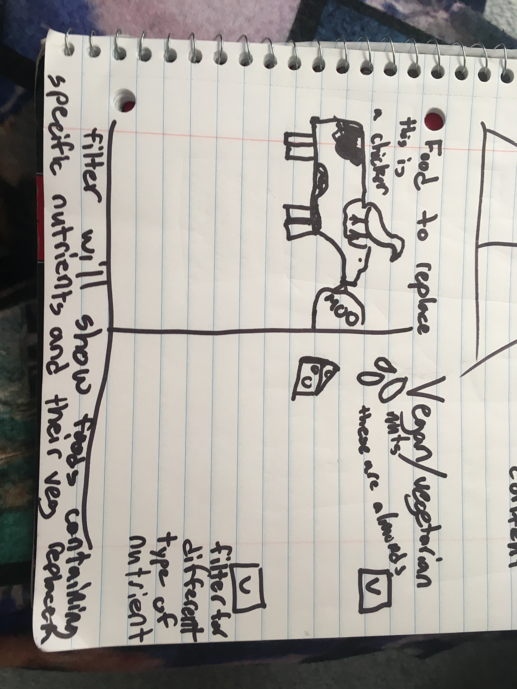

Isha Aggarwal (iaggarwa@ucsc.edu)
Nathan Hutchinson McHone (nlhutchi@ucsc.edu)
Greg Wolff (gwolff@ucsc.edu)
1. Plant-Based Food Alternatives. The purpose of this visualization is to give insight into how people can easily substitute animal products in their diet to plant-based alternatives. We intend to show how a diet with limited or no animal products can still be nutritious, flavorful, and affordable.
2. The data variables we plan to use in the visualization include: iron, protein, omega-3 and omega-6 fats, vitamin B12, vitamin D, and calcium. These are generally the greatest nutritional concerns for people who are considering switching to a plant-based diet. The data for these variables will be sourced from the following links from the Veg Society and Vegan Society:
3.Visualization Design. To achieve our purpose of showing the data to give food alternatives we are setting up a visualization that will allow us to compare food with similar nutritional breakdowns side by side. One side will have food from a non limited balanced diet while the other side will have vegan or vegetarian alternatives(this will be toggled with a filter). Our display will also have a filter in order to change the nutrient that we are interested in displaying at the time. These nutrients will be from our data of nutrients that vegans and vegetarians frequently struggle getting enough of. Each item displayed on our visualization will have a tooltip with additional nutritional information along with serving size and calories.
Github page link: https://ishamartinez.github.io/CMPS165FinalProject/